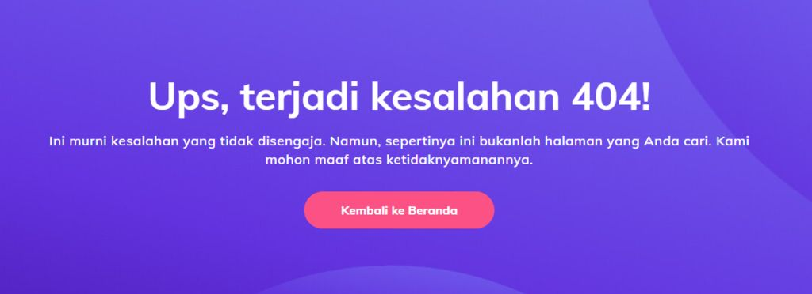

Apa itu Web Server?
Walaupun bukan istilah yang asing, Anda mungkin pernah tiba-tiba penasaran, web server itu apa sih? Nah, kami punya jawabannya: web server adalah komputer yang menyimpan, memproses, dan mengirim file website ke web browser.
Web server terdiri dari hardware dan software yang menggunakan HTTP (Hypertext Transfer Protocol) untuk merespons permintaan pengguna web dari World Wide Web.
Melalui proses ini, web server memuat dan mengirim halaman yang diminta untuk disajikan di browser pengguna, misalnya Google Chrome.
Web server juga menggunakan SMTP (Simple Mail Transfer Protocol) dan FTP (File Transfer Protocol) dalam memproses file untuk email atau penyimpanan.
Dari sisi hardware, web server terhubung ke internet untuk bertukar data atau file di antara perangkat lain yang juga terhubung. Data ini bisa berupa apa saja, seperti file HTML, gambar, file JavaScript, atau stylesheet CSS.
Hardware ini juga menyimpan software web server, yang mengontrol cara pengguna web mengakses file yang dihosting. Software ini terdiri dari beberapa komponen, berisi setidaknya satu server HTTP. Server HTTP sendiri adalah software yang bisa menangkap permintaan HTTP dan URL.
Lanjutkan membaca artikel ini ya, karena kami akan membahas lengkap tentang apa itu web server beserta cara kerja, fungsi, dan beberapa contoh web server populer. Mari mulai!
Bagaimana Cara Kerja Web Server?
Web server menggunakan model klien-server. Dalam struktur ini, satu program yang disebut klien akan meminta resource atau layanan dari program lain, yaitu server.
Untuk memproses permintaan klien web ini, cara kerja web server adalah:
- Ketika pengguna web ingin mengakses konten website, browser akan meminta akses melalui internet, yang disebut HTTP request.
Kemudian, browser mencari alamat IP website yang diminta dengan menerjemahkan URL halaman web melalui sistem domain atau pencarian dalam cache. Proses ini akan menemukan web server yang menghosting file website tersebut. - Web server menerima permintaan HTTP, lalu memprosesnya melalui server HTTP.
Begitu permintaan diterima, server HTTP ini akan menelusuri file server untuk mengambil data yang relevan. - Setelah itu, web server mengembalikan hasil dalam bentuk file website ke browser yang tadi mengirimkan permintaan. Kemudian, pengguna pun bisa melihat konten website.
Tapi, kalau server HTTP gagal menemukan atau memproses file yang diminta, server akan merespons browser dengan kode error. Salah satu pesan yang paling sering muncul adalah error 404 not found, atau 403 forbidden apabila ada masalah terkait izin.
Di sisi lain, kalau web server gagal menerima respons secara tepat waktu dari server lain yang berperan sebagai proxy atau gateway, error 504 gateway timeout mungkin juga muncul.
Dengan kata lain, DHCP server sebagai pihak yang membantu administrator dalam memberikan alamat IP. Adanya layanan DHCP server bisa mengurangi kesalahan dalam pengisian alamat IP yang dilakukan secara manual.
Sementara, DHCP client adalah perangkat yang terhubung atau tersinkronisasi dengan DHCP server. Perangkat ini akan meminta alamat IP dan menerima konfigurasi dari DHCP server sehingga dapat terkoneksi ke jaringan dengan baik.
Fungsi DHCP Server adalah sebuah layanan yang dapat memberikan secara automatis memberikan IP Address dan informasi Lain seperti Netmask, IP Gateway, IP DNS, Nama domain dll kepada Host yang memintanya.
Web Server Statis vs Dinamis
Web server bisa menyajikan konten statis maupun dinamis. Web server statis terdiri dari komputer dan software HTTP. Web server jenis ini mengirim kembali file website ke browser tanpa adanya perubahan.
Sementara itu, web server dinamis terdiri dari web server statis, dengan software tambahan yang biasanya terdiri dari database dan server aplikasi.
Web server dinamis berfungsi untuk memperbarui file yang dihosting sebelum mengirimkannya melalui server HTTP. Dengan begini, web server dinamis bisa menghasilkan dan mengirim konten dinamis ke browser web.
Fitur-Fitur Web Server
Selain mendukung protokol HTTP untuk memproses permintaan dan respons yang masuk, hampir semua web server menawarkan fitur standar yang serupa, seperti:
- File logging – File log mencatat peristiwa atau aktivitas yang dilakukan web server, seperti permintaan, keamanan, dan error log. Setiap kali web server menerima permintaan baru, sebaris teks akan ditambahkan ke log.
- Autentikasi – Ada banyak server yang menawarkan fitur ini sebelum mengizinkan akses parsial maupun penuh ke resource website. Fitur autentikasi biasanya mencakup permintaan otorisasi, yang memerlukan nama pengguna dan kata sandi.
- Pembatasan bandwidth – Bandwidth web server adalah jumlah data yang bisa ditransfer atau diproses pada waktu tertentu. Pembatasan bandwidth mengontrol kecepatan respons untuk memastikan jaringan tidak terlalu penuh dan bisa mengirimkan file dengan lancar.
- Ruang penyimpanan – Ruang ini mengacu pada jumlah ruang disk yang tersedia untuk menyimpan file, menentukan apakah web server bisa menghosting website.
Web server juga memiliki elemen penting lainnya, antara lain:
- Bahasa pemrograman – Bahasa pemrograman web server adalah jenis kode yang digunakan untuk mengembangkan program yang dijalankan oleh server. Disebut juga bahasa script sisi server, beberapa contoh bahasa pemrograman terpopuler mencakup PHP dan Python.
- Uptime – Uptime atau waktu aktif server mencatat berapa lama web server berjalan dan bisa memproses permintaan atau mengirimkan file. Uptime server juga memengaruhi waktu operasi website yang dihostingnya, disebut sebagai uptime website. Standar uptime yang saat ini diharapkan 99,9%.
Apa Fungsi Web Server?
Ada tiga fungsi utama web server, yaitu:
- Menghosting beberapa website atau aplikasi web.
- Memproses permintaan FTP (File Transfer Protocol).
- Mengirim dan menerima email.
Web server bertugas untuk menghosting website agar bisa diakses di internet. Oleh karena itu, fitur dan fungsi web server difokuskan pada pembuatan dan pemeliharaan lingkungan hosting.
Web hosting adalah layanan yang menyediakan ruang server bagi website untuk menyimpan file, aset, dan database.
Tidak itu saja, provider web hosting juga bertanggung jawab untuk memastikan server berjalan dengan lancar. Tugasnya termasuk melakukan backup, penyimpanan cache, pemantauan keamanan, dan pemeliharaan umum.
Ada sejumlah keuntungan yang akan Anda dapatkan apabila pemantauan dan pemeliharaan web server tempat website Anda dihosting dilakukan oleh web host, seperti:
- Uptime dan performa optimal – Web host akan menangani proses pemeliharaan hardware dan update software, yang membantu meningkatkan performa dan uptime website.
- Server yang aman – Web host menerapkan protokol keamanan yang efektif untuk mengurangi kerentanan dan mengamankan website yang dihosting dari malware atau serangan cyber.
- Beragam pilihan paket hosting – Pemilik website bisa memilih paket hosting yang dilengkapi dengan berbagai fitur dan fungsi sesuai kebutuhannya.
- Hemat biaya – Pemilik website tidak perlu mengurus dan mengelola server khusus, tapi cukup memilih paket hosting yang menyediakan jumlah resource server yang diperlukan.
- Fleksibilitas – Web host menawarkan paket yang bisa diatur sesuai kebutuhan, sehingga pemilik website bisa mendapatkan resource hosting tambahan seperti penyimpanan atau bandwidth sesuai kebutuhan.
Contoh Web Server yang Ada Saat Ini
Beberapa contoh web server paling populer mencakup:
- Apache HTTP Server – Web server open-source dan gratis yang bisa digunakan di banyak sistem operasi, termasuk Windows, Linux, dan Mac OS X. Apache adalah software web server yang paling pertama ada, dan salah satu pilihan terbaik bagi para pemilik website, developer, dan penyedia hosting, menguasai pasar dengan jumlah mencapai 31%.
- NGINX – Software web server open-source populer yang tadinya hanya berfungsi untuk melayani web HTTP. Sekarang, NGINX juga digunakan sebagai reverse proxy, HTTP load balancer, dan proxy email. NGINX< dikenal dengan kecepatan dan kemampuannya untuk menangani banyak koneksi, sehingga banyak website dengan traffic tinggi yang menggunakannya.
- Microsoft Internet Information Services (IIS) – IIS adalah software web server eksklusif yang dikembangkan oleh Microsoft dan banyak digunakan dalam sistem operasi Windows.
- Lighttpd – Software web server open-source dan gratis yang dikenal berkat kecepatannya, serta menggunakan daya CPU yang lebih sedikit. Lighttpd juga populer karena memiliki footprint memori yang kecil.
Dalam dunia web hosting, berbagai web host mendukung jenis server yang berbeda-beda. Contohnya adalah Hostinger, yang mendukung Apache dan NGINX, dua web server terbaik yang ada saat ini.
Kesimpulan
Pengertian web server adalah komputer yang menyimpan, memproses, dan mengirimkan file website. Web server terdiri dari sisi hardware dan software, masing-masing memiliki peran yang berbeda dalam memproses file.
Selain itu, berbagai jenis web server bisa mengirimkan konten dinamis atau statis ke browser. Apa pun jenisnya, sebagian besar web server dilengkapi dengan beberapa fitur standar, termasuk:
- File logging
- Autentikasi
- Pembatasan bandwidth
- Ruang penyimpanan
Fungsi utama fitur-fitur ini adalah untuk menghosting website, memproses permintaan HTTP, dan mengirimkan konten web kepada pengguna. Jadi, agar website Anda bisa diakses secara online, Anda perlu memiliki server sendiri atau web hosting.
Apabila memilih web hosting, proses maintenance server akan dilakukan olehnya, sehingga keamanan dan performanya akan lebih terjamin. Anda pun bisa lebih fokus pada aspek bisnis lainnya dan perkembangan website.
Terima kasih sudah membaca, sampai ketemu lagi di artikel lainnya!